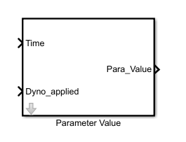

Description
This Matlab function block is used to input the parameter variation signal.

Input
1. Time is real simulation time,which is used here to give time delay.
2. Dyno applied is status coming from Dyno load block, illustrating that Dyno load has been applied and now its ready to vary the parameter value.
Output
Para_Value output signal is parameter variation signal which can be resistance or flux variation signal.
Parameters

This block contains three configurable Parameters which are configured through the parameter initialization file:
- Initial Value
- It is the initial value of the parameter which is going to vary.(i.e. Flux or Resistance).
- Time Check
- This is the value in sec,which allows delay time after which the generation of parameter signal begins.
- Percentage Variation
- It is value in % by which parameter values has to be varied.
Working

This block which geneters the parameter variation signal depending on the percentage value inputed by user Percentage Variation.
The variation of the signal is with respect to Initial Value of the parameterand it is step signal.
Generation of Para Value signal will begin after Time check(sec),once condition of Dyno applied is logic 1.
File
This test is supported by two .m files, one for parameter initialization'Parameter_Initialization.m'
and other one to run the script 'Automatic_script_Temp.m'.
Test named 'Harness_Vary_Temp.slx' and can be found in the 'Sim_Arch\Harness' folder.